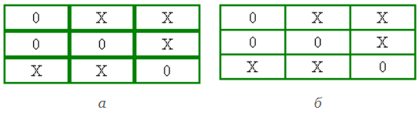
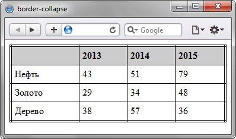

Устанавливает, как отображать границы вокруг ячеек таблицы.
Это свойство играет роль, когда для ячеек установлена рамка,
тогда в месте стыка ячеек получится линия двойной толщины.
Значение collapse заставляет браузер анализировать
подобные места в таблице и убирать в ней двойные линии.
При этом между ячейками остается только одна граница,
одновременно принадлежащая обеим ячейкам.
То же правило соблюдается и для внешних границ,
когда вокруг самой таблицы добавляется рамка.

Синтаксис
border-collapse: collapse | separate | inherit
collapse
Линия между ячейками отображается только одна,
также игнорируется значение атрибута cellspacing.
separate
Вокруг каждой ячейки отображается своя собственная рамка,
в местах соприкосновения ячеек показываются сразу две линии.
inherit
Наследует значение родителя.
Пример:
<!DOCTYPE html>
<html>
<head>
<meta charset="utf-8">
<title>border-collapse</title>
<style>
table {
width: 100%;
border: 4px double black;
border-collapse: collapse;
}
th {
text-align: left;
background: #ccc;
padding: 5px;
border: 1px solid black;
}
td {
padding: 5px;
border: 1px solid black;
}
</style>
</head>
<body>
<table>
<tr>
<th> </th>
<th>2013</th>
<th>2014</th>
<th>2015</th>
</tr>
<tr>
<td>Нефть</td>
<td>43</td>
<td>51</td>
<td>79</td>
</tr>
<tr>
<td>Золото</td>
<td>29</td>
<td>34</td>
<td>48</td>
</tr>
<tr>
<td>Дерево</td>
<td>38</td>
<td>57</td>
<td>36</td>
</tr>
</table>
</body>
</html>
Результат применения свойства border-collapse:
